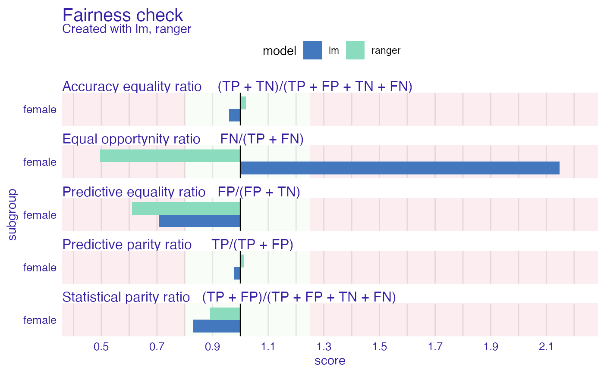

Fairness check creates fairness_object which measures different fairness metrics and wraps data, explainers and parameters in useful object. This is fundamental object in this package.
It enables to visualize fairness metrics and models in many ways and compare models on both fairness and performance level. Fairness check acts as merger and wrapper for explainers and fairness objects.
While other fairness objects values are not changed, fairness check assigns cutoffs and labels to provided explainers so same explainers with changed labels/cutoffs might be gradually added to fairness object.
Users through print and plot methods may quickly check values of most popular fairness metrics. More on that topic in details.
fairness_check( x, ..., protected = NULL, privileged = NULL, cutoff = NULL, label = NULL, epsilon = 0.8, verbose = TRUE, colorize = TRUE )
| x | object created with |
|---|---|
| ... | possibly more objects created with |
| protected | factor, protected variable (also called sensitive attribute), containing privileged and unprivileged groups |
| privileged | factor/character, one value of |
| cutoff | numeric, vector of cutoffs (thresholds) for each value of protected variable, affecting only explainers. |
| label | character, vector of labels to be assigned for explainers, default is explainer label. |
| epsilon | numeric, boundary for fairness checking, lowest acceptable ratio of metrics between unprivileged and privileged subgroups. Default value is 0.8. More on the idea behind epsilon in details section. |
| verbose | logical, whether to print information about creation of fairness object |
| colorize | logical, whether to print information in color |
An object of class fairness_object which is a list with elements:
parity_loss_metric_data - data.frame containing parity loss for various fairness metrics. Created with following metrics:
TPR - True Positive Rate (Sensitivity, Recall)
TNR - True Negative Rate (Specificity)
PPV - Positive Predictive Value (Precision)
NPV - Negative Predictive Value
FNR - False Negative Rate
FPR - False Positive Rate
FDR - False Discovery Rate
FOR - False Omission Rate
TS - Threat Score
STP - Statistical Parity
ACC - Accuracy
F1 - F1 Score
groups_data - metrics across levels in protected variable
groups_confusion_matrices - confusion matrices for each subgroup
explainers - list of DALEX explainers used to create object
cutoffs - list of cutoffs for each explainer and subgroup
fairness_check_data - data.frame used for for plotting fairness_object
... - other parameters passed to function
Fairness check
Metrics used are made for each subgroup, then base metric score is subtracted leaving loss of particular metric.
If absolute loss of metrics ratio is not within acceptable boundaries than such metric is marked as "not passed". It means that values of metrics should be within (epsilon, 1/epsilon) boundary.
The default ratio is set to 0.8 which adhere to US 80
score achieved in metrics by privileged subgroup. For example if TPR_unprivileged/TPR_privileged is less than 0.8 then such ratio is sign of discrimination. On the other hand if
TPR_privileged/TPR_unprivileged is more than 1.25 (1/0.8) than there is discrimination towards privileged group.
Epsilon value can be adjusted to user's needs. It should be interpreted as the lowest ratio of metrics allowed. There are some metrics that might be derived from existing metrics (For example Equalized Odds - equal TPR and FPR for all subgroups).
That means passing 5 metrics in fairness check asserts that model is even more fair. In fairness_check models must always predict positive result. Not adhering to this rule
may lead to misinterpretation of the plot. More on metrics and their equivalents:
https://fairware.cs.umass.edu/papers/Verma.pdf
https://en.wikipedia.org/wiki/Fairness_(machine_learning)
Parity loss - visualization tool
Parity loss is computed as follows: M_parity_loss = sum(abs(log(metric/metric_privileged)))
where:
M - some metric mentioned above
metric - vector of metric scores from each subgroup metric_privileged - value of metric vector for privileged subgroup
base_metric - scalar, value of metric for base subgroup
Zafar,Valera, Rodriguez, Gummadi (2017) https://arxiv.org/pdf/1610.08452.pdf
Hardt, Price, Srebro (2016) https://arxiv.org/pdf/1610.02413.pdf
Verma, Rubin (2018) https://fairware.cs.umass.edu/papers/Verma.pdf
data("german") y_numeric <- as.numeric(german$Risk) -1 lm_model <- glm(Risk~., data = german, family=binomial(link="logit")) rf_model <- ranger::ranger(Risk ~., data = german, probability = TRUE, max.depth = 3, num.trees = 100, seed = 1) explainer_lm <- DALEX::explain(lm_model, data = german[,-1], y = y_numeric)#> Preparation of a new explainer is initiated #> -> model label : lm ( default ) #> -> data : 1000 rows 9 cols #> -> target variable : 1000 values #> -> predict function : yhat.glm will be used ( default ) #> -> predicted values : No value for predict function target column. ( default ) #> -> model_info : package stats , ver. 4.0.4 , task classification ( default ) #> -> predicted values : numerical, min = 0.1369187 , mean = 0.7 , max = 0.9832426 #> -> residual function : difference between y and yhat ( default ) #> -> residuals : numerical, min = -0.9572803 , mean = 1.940006e-17 , max = 0.8283475 #> A new explainer has been created!#> Preparation of a new explainer is initiated #> -> model label : ranger ( default ) #> -> data : 1000 rows 9 cols #> -> target variable : 1000 values #> -> predict function : yhat.ranger will be used ( default ) #> -> predicted values : No value for predict function target column. ( default ) #> -> model_info : package ranger , ver. 0.12.1 , task classification ( default ) #> -> predicted values : numerical, min = 0.2744313 , mean = 0.6991764 , max = 0.9021086 #> -> residual function : difference between y and yhat ( default ) #> -> residuals : numerical, min = -0.8758052 , mean = 0.0008235875 , max = 0.6119131 #> A new explainer has been created!fobject <- fairness_check(explainer_lm, explainer_rf, protected = german$Sex, privileged = "male")#> Creating fairness object #> -> Privileged subgroup : character ( Ok ) #> -> Protected variable : factor ( Ok ) #> -> Cutoff values for explainers : 0.5 ( for all subgroups ) #> -> Fairness objects : 0 objects #> -> Checking explainers : 2 in total ( compatible ) #> -> Metric calculation : 12/12 metrics calculated for all models #> Fairness object created succesfully